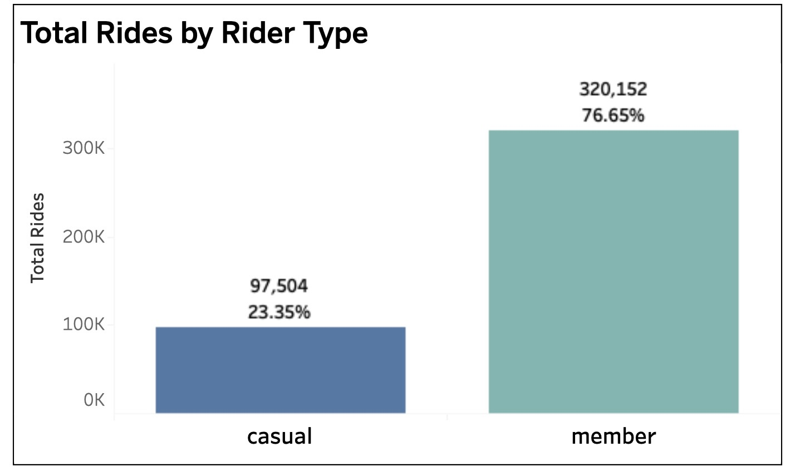
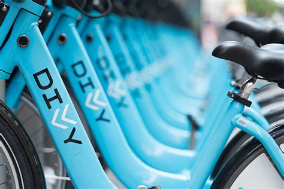
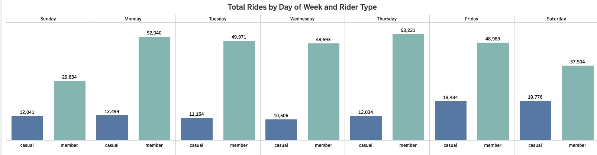
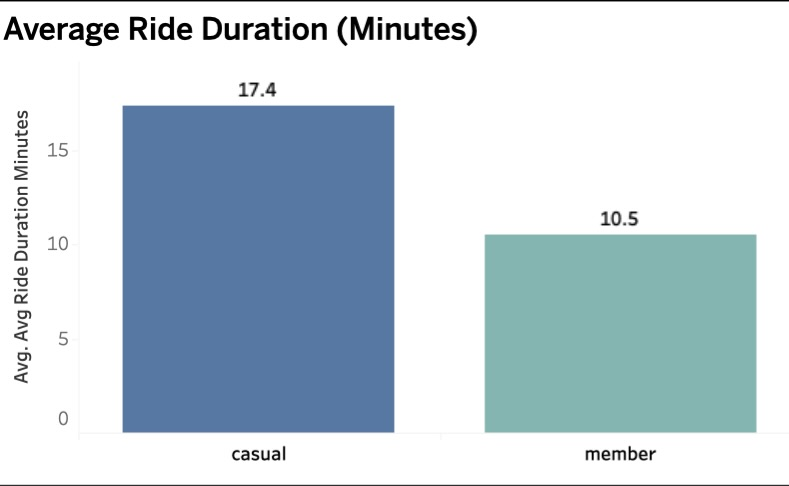
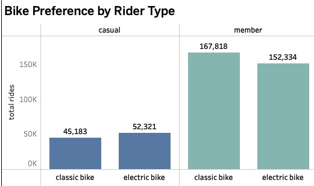

Target repeat weekday riders
Use in-app prompts and email offers after multiple weekday trips to connect routine riding with membership savings.
Marketing analytics · Rider behavior
How rider behavior reveals practical opportunities to convert casual riders into long-term members.
The question
This analysis compares casual and member rider behavior across ride volume, day of week, bike type, and trip duration. The goal is to find moments when casual riders are most receptive to a membership message.
The analysis focuses on observed ride behavior. It identifies conversion opportunities, rather than assuming why individual riders choose one option over another.
1 · Membership base
Membership already drives most ridership, giving Divvy a strong base for growing recurring usage and revenue.


Conversion opportunity
Casual riders represent a smaller share of rides, but their behavior highlights the moments when a membership offer can be most relevant.
2 · Weekly rhythm
Members ride at a consistently higher volume from Monday through Friday, pointing to repeatable, routine use cases.

A weekday pattern can inform timely membership prompts, such as after repeated weekday rides or at the end of a commuter-focused trip.
3 · Ride behavior
Casual trips averaged 17.4 minutes, versus 10.5 minutes for members. Both rider groups selected classic bikes more often than electric bikes.


4 · Recommended next steps
Use in-app prompts and email offers after multiple weekday trips to connect routine riding with membership savings.
Frame memberships around cost predictability and flexibility for casual riders whose trips last longer.
Lead with familiar classic-bike use cases and clear membership benefits at the end of a ride.
Project resources
Use the interactive dashboard, review the SQL workflow, or open the presentation deck directly in your browser.